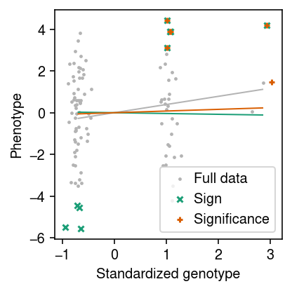
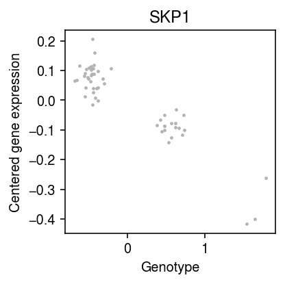

Is eQTL analysis robust to removing some data points?
Table of Contents
Introduction
eQTL analysis is typically performed by fitting a series of simple linear regressions \( \DeclareMathOperator\N{\mathcal{N}} \DeclareMathOperator*\argmax{arg max} \newcommand\ones{\boldsymbol{1}} \newcommand\vx{\mathbf{x}} \newcommand\vw{\mathbf{w}} \newcommand\vy{\mathbf{y}} \)
\begin{equation} y_i \sim \N(x_i b, \sigma^2), \qquad i = 1, \ldots, n \end{equation}where \(y_i\) denotes the phenotype of individual \(i\), and \(x_i\) denotes the genotype at the SNP of interest (for simplicity, centered and scaled). Typically, one estimates \(\hat{b}\) and tests its statistical significance.
Broderick et al. 2020 demonstrate that such inferences can be not robust (e.g., changing statistical significance) to removing some of the data points, due to reasons other than heavy tailed errors, outliers, etc. The key ideas of their methodology are: (1) introduce a weight for each data point \(w_i\), so that dropping sample \(i\) corresponds to setting \(w_i = 0\); (2) write the inference problem (e.g., significance testing) as a functional \(\phi\) of the weighted data and an estimator \(\hat{b}(\cdot)\); and (3) write the question of robustness as an optimization problem
\begin{align} \vw^* &= \argmax_{\vw \in \mathcal{W}} \phi(\hat{b}(\vx, \vy, \vw), \vw) - \phi(\hat{b}(\vx, \vy, \ones), \ones)\\ &\approx \argmax_{\vw \in \mathcal{W}} \sum_i \left(\frac{\partial\phi}{\partial w_i} \Bigg\rvert_{\vw = \ones}\right) \end{align}where \(\mathcal{W}\) is some subset of all possible subsets of the data (e.g., all subsets of size \(m\)) and the last approximation is made via first-order Taylor expansion. Here, we play with this idea in the context of eQTL mapping, using simulations based on sample sizes used in real studies, and realistic effect sizes (Gusev et al. 2016, Wheeler et al. 2016). We also extend the methodology to the susie model (Wang et al. 2020).
Setup
import numpy as np import pandas as pd import scipy.stats as st import sqlite3 import torch
%matplotlib inline %config InlineBackend.figure_formats = set(['retina'])
import matplotlib.pyplot as plt plt.rcParams['figure.facecolor'] = 'w' plt.rcParams['font.family'] = 'Nimbus Sans'
Methods
Simple linear regression
def ols_bhat(x, y, w): assert x.shape == y.shape assert y.shape == w.shape xtx = x.T @ torch.diag(w.squeeze()) @ x bhat = torch.solve(x.T @ torch.diag(w.squeeze()) @ y, xtx)[0] s2 = torch.sum(w * (y - x @ bhat) ** 2) / (y.shape[0] - bhat.shape[0]) se = torch.sqrt(s2 / xtx) return bhat, se def ols_sign(bhat, se, w): # Important: we want to change sign from positive to negative return -bhat def ols_fwer(bhat, se, w, alpha=.05 / 20000): """Indicator whether the test was significant at level 0.05 after Bonferroni correction By default, assume p = 20,000 tests""" if bhat > 0: return -bhat / se + st.norm.ppf(alpha) else: return bhat / se - st.norm.ppf(alpha) def ols_influence(x, y, phi, **kwargs): w = torch.ones_like(y, requires_grad=True) bhat, se = ols_bhat(x, y, w) assert torch.isfinite(bhat) phi = phi(bhat, se, w, **kwargs) phi.backward() with torch.no_grad(): # Important: we need negative influence elsewhere return bhat.squeeze().numpy(), se.squeeze().numpy(), w.grad.squeeze().numpy() def ols_prop_sign_change(x, y): bhat, se, influence = ols_influence(x, y, ols_sign) res = {'bhat': bhat, 'se': se} if bhat > 0: target = -bhat drop = np.where((np.cumsum(np.sort(influence)) < target))[0] else: target = bhat drop = np.where((np.cumsum(np.sort(-influence)) < target))[0] if drop.size > 0: n_drop = drop[0] res['n_drop'] = n_drop res['frac_drop'] = n_drop / y.shape[0] idx = np.argsort(influence)[:n_drop] res['drop'] = idx v = torch.ones_like(y) v[idx] = 0 bhat1, se1 = ols_bhat(x, y, v) res['bhat1'] = bhat1 res['se1'] = se1 return res def ols_prop_fwer_change(x, y, alpha=.05 / 20000): bhat, se, influence = ols_influence(x, y, ols_fwer, alpha=alpha) res = {'bhat': bhat, 'se': se, 'pval': min(st.norm.sf(bhat / se), st.norm.sf(-bhat / se))} if bhat > 0: target = -bhat / se + st.norm.sf(alpha / 2) drop = np.where((np.cumsum(np.sort(influence)) < target))[0] else: target = bhat / se - st.norm.sf(alpha / 2) drop = np.where((np.cumsum(np.sort(-influence)) < target))[0] if drop.size > 0: n_drop = drop[0] res['n_drop'] = n_drop res['frac_drop'] = n_drop / y.shape[0] idx = np.argsort(influence)[:n_drop] res['drop'] = idx v = torch.ones_like(y) v[idx] = 0 bhat1, se1 = ols_bhat(x, y, v) res['bhat1'] = bhat1 res['se1'] = se1 res['pval1'] = st.norm.sf(bhat1 / se1) return res
eQTL simulation
Simulate genotypes at one SNP with allele frequency \(f\), and generate noise so that the PVE by the simulated genotype is as specified.
def simulate_easy(n, pve, seed=0): rng = np.random.default_rng(seed) x = rng.normal(size=n) # Important: fix b = 1 e = rng.normal(scale=np.sqrt(((1 / pve) - 1)) * x.var(), size=n) y = x + e x -= x.mean() x /= x.std() y -= y.mean() return torch.tensor(x).unsqueeze(1), torch.tensor(y).unsqueeze(1) def simulate(n, f, pve, seed=0): rng = np.random.default_rng(seed) x = rng.binomial(n=2, p=f, size=n).astype(float) # Important: fix b = 1 e = rng.normal(scale=np.sqrt(((1 / pve) - 1)) * x.var(), size=n) y = x + e x -= x.mean() x /= x.std() y -= y.mean() return torch.tensor(x).unsqueeze(1), torch.tensor(y).unsqueeze(1)
Results
Sanity check
Check our implementation against the analytic expression (eq. 2.13).
x, y = simulate(n=100, f=0.25, pve=0.01, seed=0) w = torch.ones_like(y, requires_grad=True) bhat, se = ols_bhat(x, y, w) bhat.backward() torch.isclose(w.grad, x * (y - x @ bhat) / (x.T @ x)).all()
tensor(True)
Easy simulation
Simulate an example where the linear approximation is unlikely to be a problem.
x, y = simulate_easy(n=10000, pve=0.01) bhat, se, influence = ols_influence(x, y, ols_sign)
n_drop = np.where(np.cumsum(np.sort(influence)) < -bhat)[0][0] idx = np.argsort(influence)[:n_drop] n_drop / x.shape[0]
0.0304
v = torch.ones_like(y, requires_grad=False) v[idx] = 0 ols_bhat(x, y, v)
(tensor([[-0.0946]], dtype=torch.float64), tensor([[0.0979]], dtype=torch.float64))
ols_prop_sign_change(x, y)
{'bhat': array(0.85542434),
'se': array(0.09851568),
'n_drop': 304,
'frac_drop': 0.0304,
'bhat1': tensor([[-0.0946]], dtype=torch.float64),
'se1': tensor([[0.0979]], dtype=torch.float64)}
Simulated eQTL
Simulate an eQTL with realistic allele frequency, sample size, and effect size. Report how many data points need to be removed to change the sign of \(\hat{b}\).
x, y = simulate(n=100, f=0.15, pve=0.02) res = ols_prop_sign_change(x, y) res
{'bhat': array(0.39178643),
'se': array(0.21633481),
'n_drop': 9,
'frac_drop': 0.09,
'drop': array([94, 97, 38, 89, 61, 40, 92, 37, 48]),
'bhat1': tensor([[-0.0382]], dtype=torch.float64),
'se1': tensor([[0.1885]], dtype=torch.float64)}
Report how many data points need to be removed to make the result not significant at level \(\alpha = 0.05\).
res1 = ols_prop_fwer_change(x, y, alpha=0.05)
res1
{'bhat': array(0.39178643),
'se': array(0.21633481),
'pval': 0.03506895996320592,
'n_drop': 6,
'frac_drop': 0.06,
'drop': array([94, 97, 38, 89, 37, 26]),
'bhat1': tensor([[0.0803]], dtype=torch.float64),
'se1': tensor([[0.2257]], dtype=torch.float64),
'pval1': array([[0.36104071]])}
cm = plt.get_cmap('Dark2') plt.clf() plt.gcf().set_size_inches(3, 3) xx = x.squeeze().numpy() + np.random.normal(scale=0.1, size=x.shape[0]) plt.scatter(xx, y.squeeze().numpy(), c='0.7', s=2, label='Full data') plt.plot([x.min(), x.max()], [x.min() * res['bhat'], x.max() * res['bhat']], c='0.7', lw=1) for i, (r, l, m) in enumerate(zip([res, res1], ['Sign', 'Significance'], ['x', '+'])): plt.plot([x.min(), x.max()], [x.min() * r['bhat1'], x.max() * r['bhat1']], c=cm(i), lw=1) plt.scatter(xx[r['drop']], y[r['drop']], marker=m, s=16, c=cm(i), label=l) plt.legend(handletextpad=0) plt.xlabel('Standardized genotype') plt.ylabel('Phenotype') plt.tight_layout()

Simulate an eQTL with effect size equal to the median cis-heritability.
x, y = simulate(n=100, f=0.05, pve=0.16) res = ols_prop_sign_change(x, y) res
{'bhat': array(0.39748651), 'se': array(0.02987226)}
Real eQTLs
Look at the top eQTL in iPSC scRNA-seq (Sarkar et al. 2019).
log_mu = pd.read_csv('/project2/mstephens/aksarkar/projects/singlecell-qtl/data/density-estimation/design1/zi2-log-mu.txt.gz', sep=' ', index_col=0) logodds = pd.read_csv('/project2/mstephens/aksarkar/projects/singlecell-qtl/data/density-estimation/design1/zi2-logodds.txt.gz', sep=' ', index_col=0) genes = pd.read_csv('/project2/mstephens/aksarkar/projects/singlecell-qtl/data/scqtl-genes.txt.gz', sep='\t') for x in (log_mu, logodds): del x['NA18498'] # Important: log(sigmoid(x)) = -softplus(-x) log_mean = log_mu - np.log1p(np.exp(logodds))
with sqlite3.connect('/project2/mstephens/aksarkar/projects/singlecell-qtl/browser/browser.db') as conn: x = pd.read_sql('select * from mean_qtl_geno where gene = ?', con=conn, params=('ENSG00000113558',)).set_index('ind')['value'] y = log_mean.loc['ENSG00000113558'] y -= y.values.mean() x -= x.values.mean() x, y = x.align(y, join='inner')
res = ols_prop_fwer_change(torch.tensor(x.values.reshape(-1, 1)), torch.tensor(y.values.reshape(-1, 1)), alpha=0.005)
res
{'bhat': array(-0.19109817),
'se': array(0.01067698),
'pval': 6.096084570244492e-72}
plt.clf() plt.gcf().set_size_inches(3, 3) np.random.seed(2) xx = x + np.random.normal(scale=0.1, size=x.shape[0]) plt.scatter(xx, y, color='0.7', s=2, label='Full data') plt.xlabel('Genotype') plt.ylabel('Centered gene expression') plt.title('SKP1') plt.tight_layout()

Look at a weaker eQTL.
mean_qtl_stats = pd.read_csv('/project2/mstephens/aksarkar/projects/singlecell-qtl/data/scqtl-mapping/zinb/mean.txt.gz', sep=' ', index_col=0)
mean_qtl_stats[mean_qtl_stats['p_beta'] < 2.5e-6].sort_values('p_beta', ascending=False).head()[['p_nominal', 'p_beta']]
p_nominal p_beta gene ENSG00000134184 1.593470e-09 0.000002 ENSG00000105640 2.157150e-09 0.000002 ENSG00000182362 9.817790e-10 0.000002 ENSG00000145725 7.636840e-09 0.000002 ENSG00000142684 1.657690e-09 0.000002
k = 'ENSG00000134184' with sqlite3.connect('/project2/mstephens/aksarkar/projects/singlecell-qtl/browser/browser.db') as conn: x = pd.read_sql('select * from mean_qtl_geno where gene = ?', con=conn, params=(k,)).set_index('ind')['value'] y = log_mean.loc[k] x -= x.values.mean() y -= y.values.mean() x, y = x.align(y, join='inner')
res = ols_prop_fwer_change(torch.tensor(x.values.reshape(-1, 1)), torch.tensor(y.values.reshape(-1, 1)), alpha=0.005)
res
{'bhat': array(-0.51927837),
'se': array(0.07773376),
'pval': 1.1929436208959757e-11}